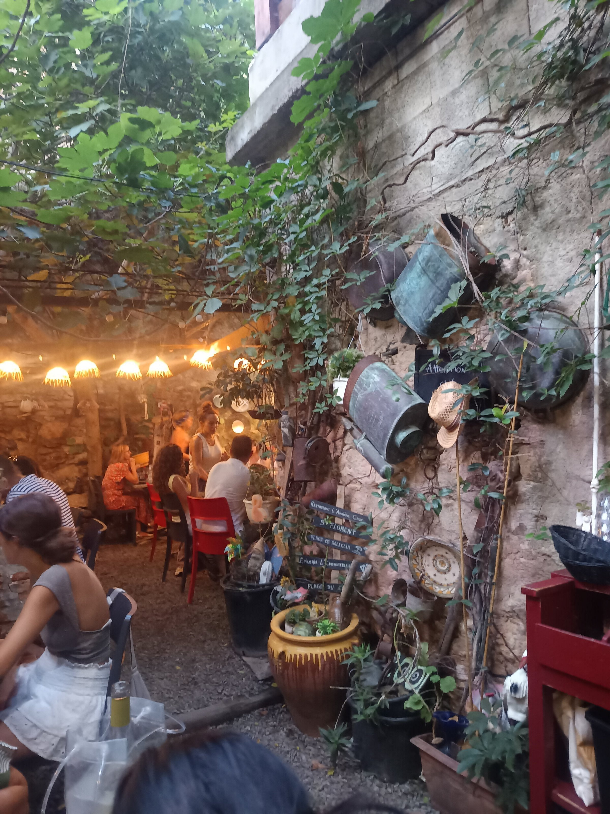
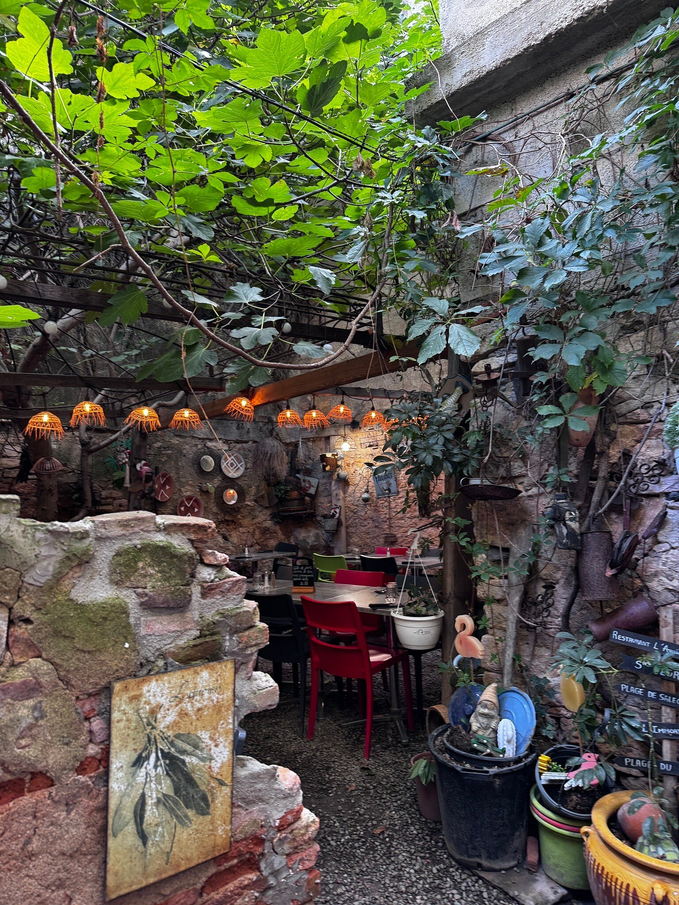
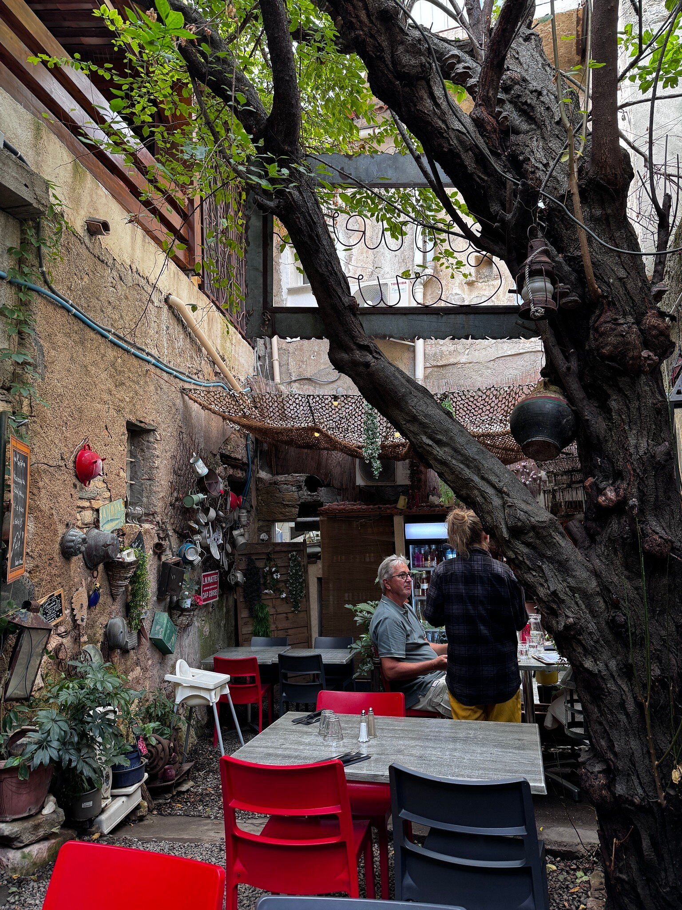
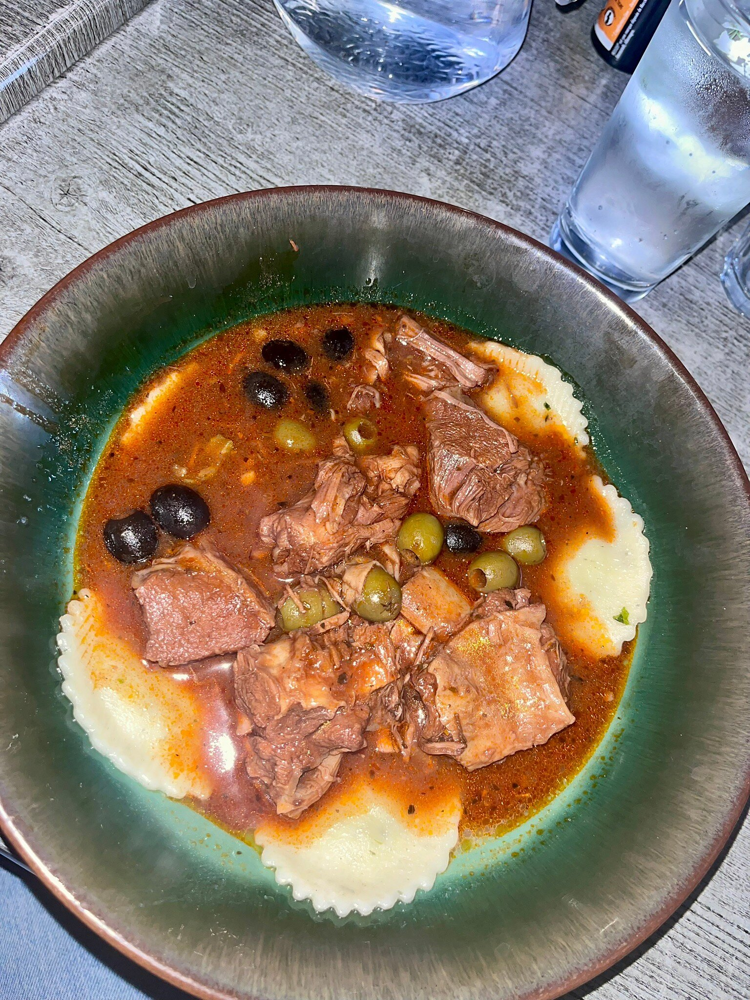
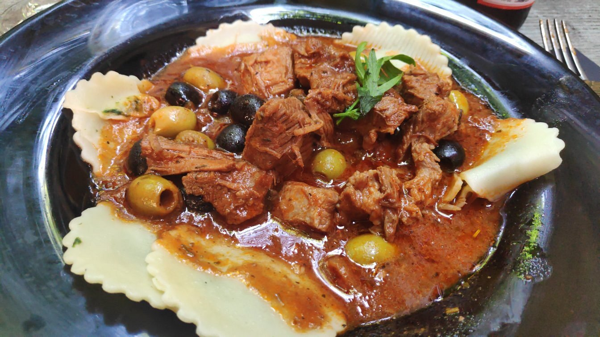
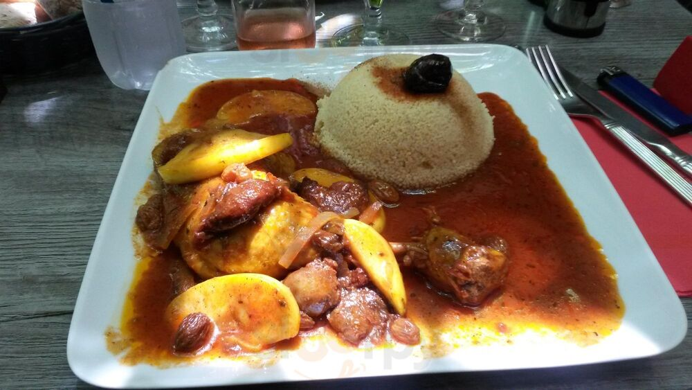
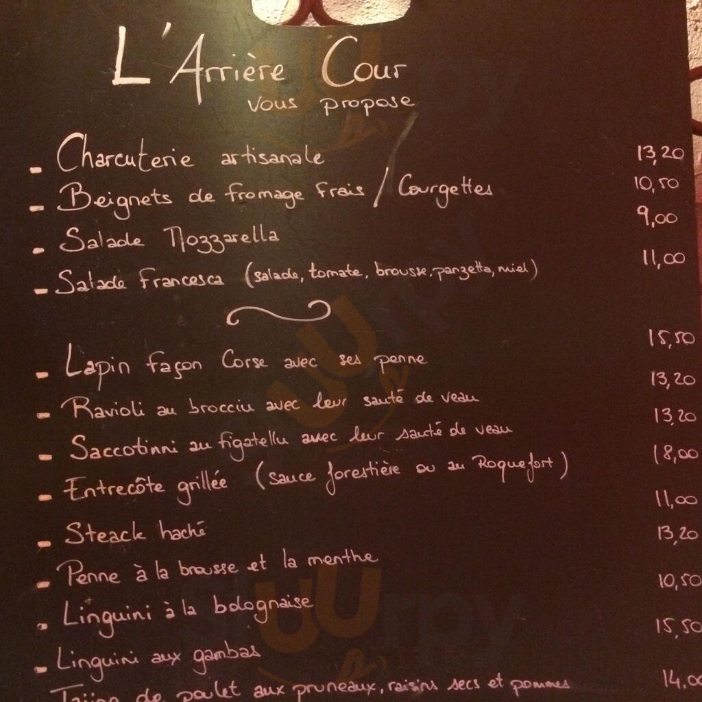
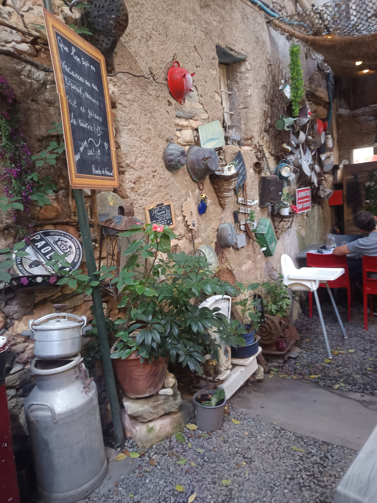
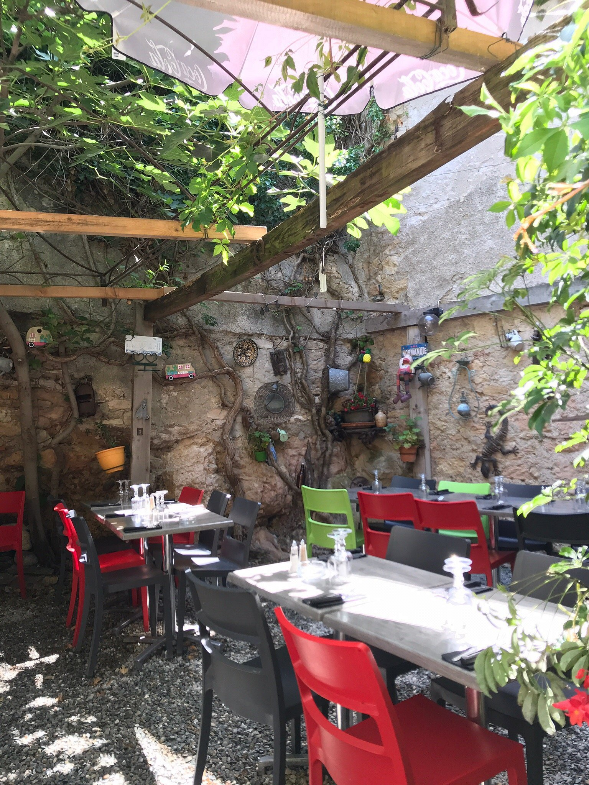
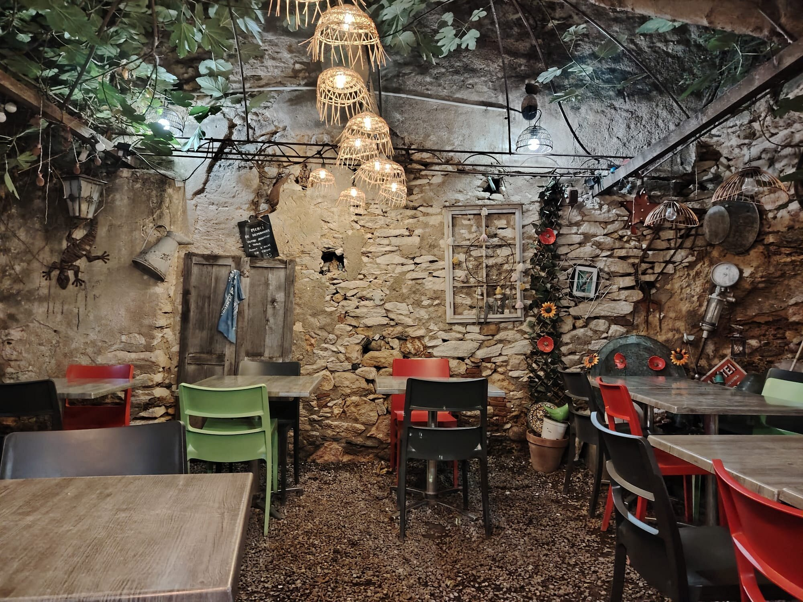

Poussez la porte discrète de la Place des Portes. Derrière les pierres, une cour ombragée, un platane centenaire, et la cuisine généreuse d'une maison corse.



Une ruelle, une porte en bois, et soudain : la lumière change. Les guirlandes s'allument sous la voûte des feuilles, les pierres corses absorbent le dernier soleil, les tables rouges accueillent les habitués comme les voyageurs de passage.
Depuis des années, la cour fonctionne comme un salon à ciel ouvert. On vient y boire un verre, on s'attarde entre le plat et le dessert, on écoute les conversations se mêler au chant des cigales.
Le platane veille, le figuier murmure, les arrosoirs chinés ponctuent le plafond végétal. Tout ici a été rassemblé patiemment, objet après objet, saison après saison.
Place des Portes, Saint-Florent.



Et ce que l'ardoise décidera ce soir.

Chaque jour, la craie court sur l'ardoise : spécialités corses, pâtes maison, viandes mijotées, poissons du jour. Les prix restent raisonnables, la générosité reste la règle.
Comptez 20 à 30 euros par personne pour un repas complet, vin compris si vous aimez accompagner.

Atypical restaurant with a magnificent plane tree overhead, a hidden garden in the heart of Saint-Florent.
Avis TripAdvisor, 5 étoiles.
La maison ne cherche pas à ressembler à une autre. Elle assume ses plaques chinées, ses arrosoirs suspendus, ses chaises dépareillées. C'est cette personnalité, signée de l'ardoise "Proverbe de Francine", qui fait le charme du lieu.
"Super restaurant, très bons plats, très bon accueil. Le top." Avis RestaurantGuru.


Fermé de novembre à mars.
Place des Portes
20217 Saint-Florent, Haute-Corse
Au coeur de la vieille ville, à deux pas du port.